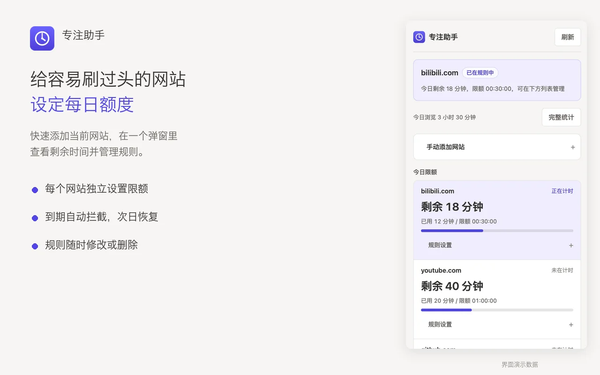
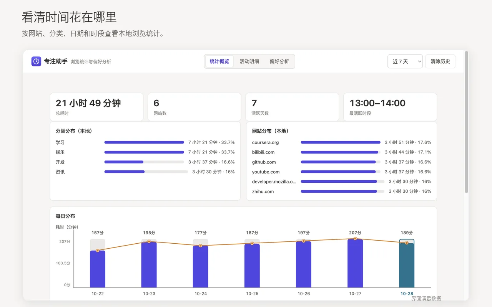
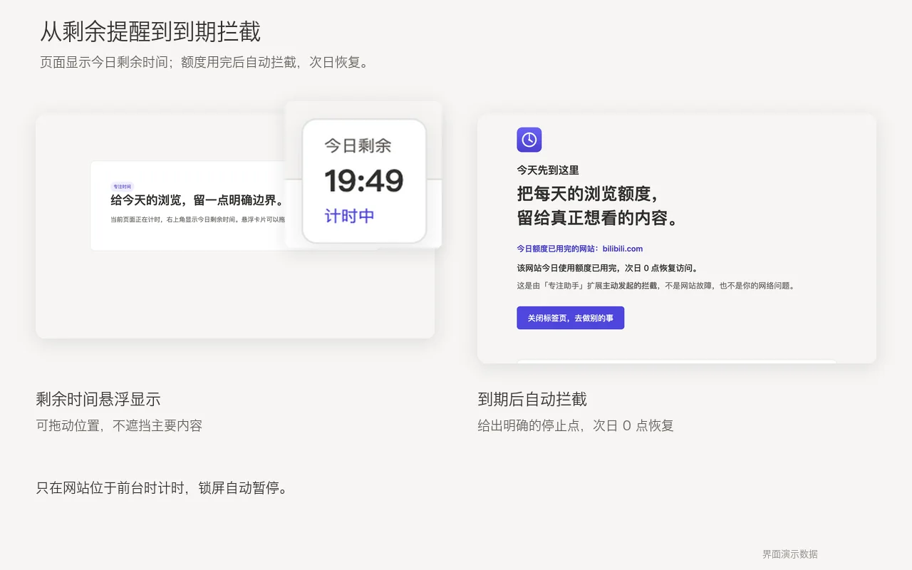

为每个网站设定额度
快速添加当前网站，独立设置每日时长。规则可以随时修改或删除，倒计时悬浮框可移动到不遮挡内容的位置。
简单，但刚刚好
不靠意志力反复拉扯，用一个明确的边界，结束无意识的浏览。
快速添加当前网站，独立设置每日时长。规则可以随时修改或删除，倒计时悬浮框可移动到不遮挡内容的位置。
按网站、分类、日期和时段查看本地统计。需要时，也可以接入自己的模型服务，生成可选的 AI 偏好分析。
额度即将用完时提醒，用完后自动进入拦截页。没有复杂的惩罚，只有今天到此为止，明天重新开始。
产品预览
真实扩展界面 · 演示数据

当前网站一键添加，剩余时间与规则清晰可见。

从总览到活动明细，理解自己的浏览习惯。

从温和提醒到明确停止，给今天一个收尾。
将扩展压缩包解压到一个你会长期保留的文件夹。
Chrome 访问 chrome://extensions，Edge 访问 edge://extensions，开启“开发者模式”。
选择刚才解压、包含 manifest.json 的文件夹，然后将专注助手固定到工具栏。
隐私，默认如此